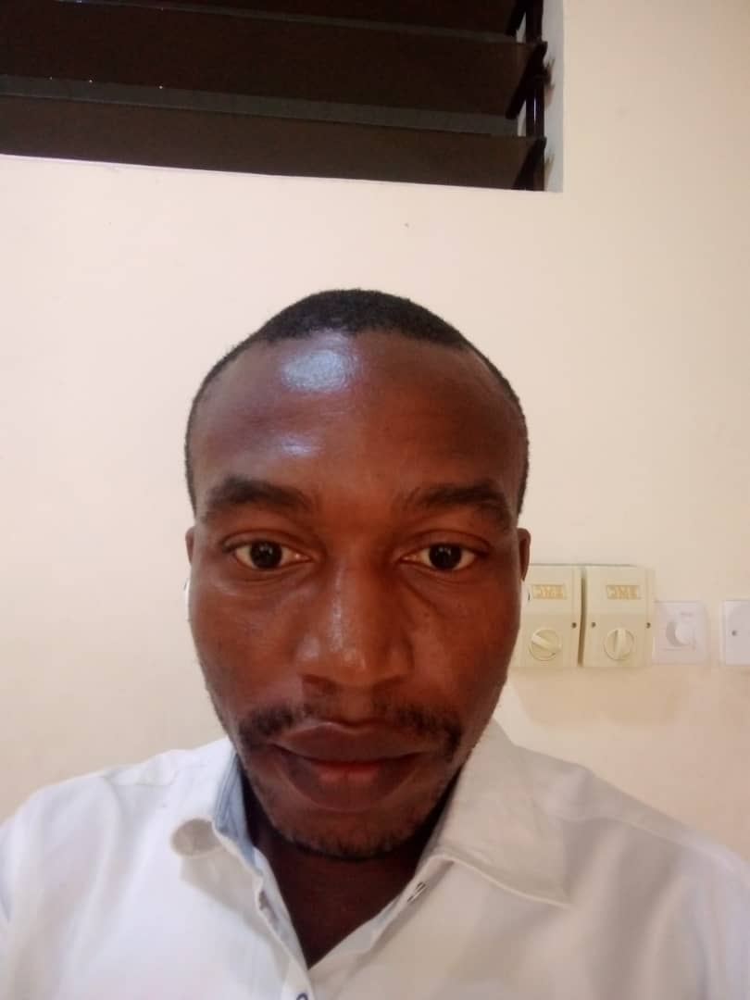

UDIE STEPHEN UDIE | WDD 130
My name is Udie Stephen Udie, Am an expert graphics designer and am from Nigeria and am currently Schooling at Brigham Young Uninversity-Idaho where i run my Bachelor Degree Program on Computer Programming.
I Am an IT lover, i enjoy designing and coding,i work remotely and onsite and i am open to remote jobs, i love eating afang soup at night but bread and tea in the morning, i also hate being broke, hence i dont mind working hard to enable me not to beg anyone for money, in watch word is perseverance, i believe with it, the sky will be my starting point, i normally spend my leisure time watching good movie, am presently watching a seasonal movie called LUCIFA, when ever am tired i dont mind shotting my eyes for a quike rest, which is mostly at night.
Educational Endeavors
My commitment to education is evident in my numerous initiatives aimed at fostering creativity and critical thinking among students. I have taught courses at various institutions, sharing my expertise in both art and technology. my teaching philosophy emphasizes the importance of interdisciplinary learning, encouraging students to explore the connections between different fields of study.